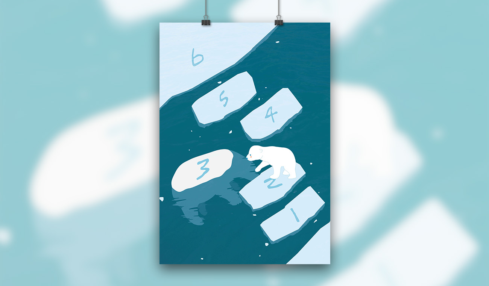

跳格子 視傳設計
2014 AI
台灣國際學生創意大賽 主題：生生
地球暖化使冰川加速融化，使北極熊在回家的路上如同跳房子，必須小心地突破難關才能回到家，而北極熊媽媽為了讓北極熊寶寶順利回家而犧牲了自己。
Glaciers are melting faster because of global warming,which forces polar bears to hop from one iceberg to another on their way home. Hoping to ensure the baby bears' safety, the mother bear sacreifices herself...